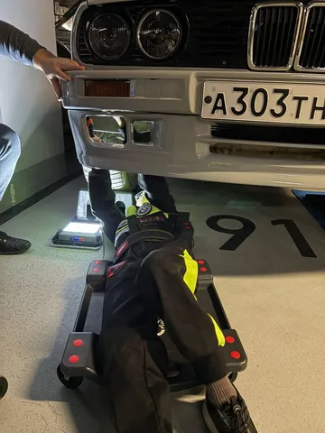
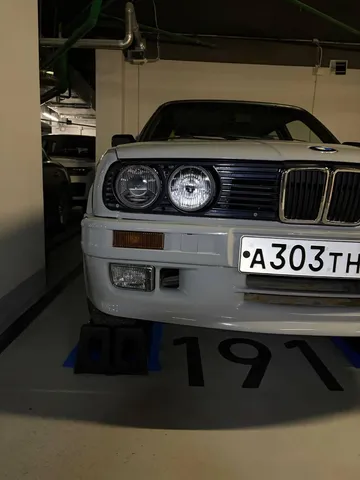

Как я писал в прошлый раз, обвес-то поставили, а светотехнику в него - нет. Поворотники от штатного бампера не подходят, а туманок и не было, но в новом бампере отверстия под них предусмотрены. Что ж, засучили рукава, работаем!
Поворотники под м-тех бампер нашлись без проблем. Но вот незадача - они (как водится) пустые - без патронов для лампочек, только пластиковый корпус и плафон. Интенсивный гуглинг не помог - мне не удалось найти патроны для этих корпусов вообще никак и нигде, просто нет информации, что туда должно идти. По элкатс в оригинале туда идет неразборный корпус с патроном под фишку. Ладно, идем на маркет и покупаем 5 разных патронов в поисках нужного размера, благо они стоят по 100р. И к ним 3 вида ламп, потому что патроны под разные типы. Далее все это примеряем и понимаем, что, конечно же, ни один патрон не садится в корпус хорошо. Кусачки, резиновое колечко, поцарапанный палец Азата - и, вуаля, патроны на месте.
Дальше, очевидно, нужно поворотники установить. На удивление, в бампере даже есть скрытые отверстия под болты во внутренней части корпуса. И они даже "стреляют" с соответствующими отверстиями в ушках корпуса поворотников. Однако, рано радоваться. Потому что попробовать воспользоваться ими по назначению (посадить на болты с шайбами и гайками) можно было бы только при снятом бампере. И то не факт - чем держать гайку, если корпус поворотника закрывает доступ? Посадочного места для априорной фиксации гайки там не предусмотрено. В общем, стяжки снова выручили. Сначала, пока есть зазор, сцепляешь крепежные отверстия и ушки, и затем затягиваешь стяжку, тем самым притягивая ее к бамперу изнутри.
На счастье мы сначала провели дискавери, и лишь потом приступили к деливери, поэтому знали, что начинать надо с поворотников. Потому что если сначала поставить туманки - доступ к посадочному месте поворотников будет весьма затруднен. Теперь же можно переходить к туманкам. У них тоже есть крепежные ушки. Вот только у бампера для них нет решительно никакой ответной части, так что как их нужно по задумке крепить - 0 идей. Пришлось довольно варварски засаморезить их в какие-то ближайшие части, но так, чтобы саморезы не вылезли снаружи. Не самое элегантное решение, но задачу резолвит. Правда, левая туманка заняла на час больше времени, чем правая, так как ровно за ней висит клаксон, и изрядно мешает. Пришлось снимать, было непросто.
Итого, возились часов 5, зато задачи по светотехнике в бампере решены. Теперь передняя часть авто имеет законченный облик. Обвес из безликого пластика стал булочкой. На самом деле, ковырялись мы полтора дня, но о том, что еще удалось сделать - напишу в следующий раз. #лёха_строит_бэху

